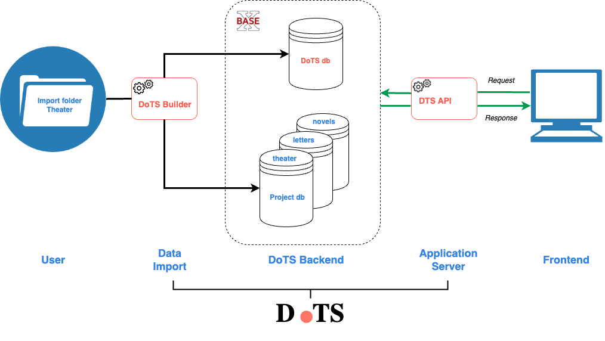

Publier un corpus avec DoTS
Pour publier une collection de documents TEI, il suffit de charger un dossier de dépôt conforme aux recommandations DoTS.
Cette page décrit le worflow de publication, les recommandations DoTS de structuration de ce dossier de dépôt, et la procédure de création et de gestion d'un projet.
Introduction
Vocabulaire
Projet. Un "projet" est une collection DTS de premier niveau, un corpus éditorial défini. Par exemple, il est possible de donner accès via un même endpoint DTS à des correspondances ET à des pièces de théâtre : on distinguera donc le projet Correspondance et le projet Théâtre.
Dossier de dépôt ou Import folder. Pour être correctement chargé en base avec les outils DoTS, un projet doit être structuré dans un dossier conformément aux recommandations de DoTS. Ce dossier est désigné dans la documentation par l’expression "dossier de dépôt".
Base de données projet ou DB projet. Chaque projet (chaque collection DTS de premier niveau) est importé sous la forme d’une base de données BaseX. Les projets Correspondance et Théâtre sont chargés sous la forme de deux bases de données distinctes, par exemple respectivement letters et theater.
Workflow

Note
DoTS ne fournit pas d'outil pour passer d'un dossier de travail utilisateur à un dossier de dépôt. Cependant, la structure de ce dossier de dépôt est conçue pour faciliter le travail éditorial. Pour optimiser le workflow, nous recommandons donc de travailler autant que possible à l’édition des sources XML/TEI directement dans le dossier de dépôt.
Préparer les données
Préparer le dossier de dépôt
Un dossier de dépôt contient :
- obligatoirement les sources XML/TEI du projet (dossier
data/), organisées selon la hiérarchie de votre choix. - optionnellement les métadonnées décrivant les collections, documents et passages (dossier
metadata/). Si présent, le document XMLdots_metadata_mapping.xmlest obligatoire. - optionnellement un
README.mddocumentant le dossier de dépôt.
Modèle
nom_projet/ # Racine du dossier de dépôt
data/ # OBLIGATOIRE. Fichiers TEI en dossiers de collection
collection_1/ # Collection 1
file_1.xml # file_1 appartient par défaut à la collection 1
file_2.xml # idem
collection_2/ # Collection 2
file_100.xml # file_100 appartient par défaut à la collection 2
file_101.xml # idem
metadata/ # OPTIONNEL. Métadonnées des ressources
dots_metadata_mapping.xml # Déclaration du chemin des métadonnées
metadata_1.tsv # Un fichier de métadonnées
metadata_2.tsv # idem
README.md # OPTIONNEL. Documentation (plan de nommage, etc.)
Déclarer les passages
L'utilisateur peut décrire la structure éditoriale de chaque document et définir l'accès aux passages. Il doit pour cela faire usage de l'élément TEI tei:citeStructure (voir dossier de dépôt).
Exemples
Pour bien illustrer toutes les potentialités offertes par DTS et DoTS, un cookbook est disponible, avec plusieurs exemples :
Gestion d’un projet
Pour lancer les commandes, il est nécessaire se déplacer dans le dossier dots/scripts.
Création d’un projet
Cette commande crée un projet DoTS à partir d’un dossier de dépôt.
Arguments :
project_dir_path: chemin absolu en local vers le dossier de dépôt du projettop_collection_id: identifiant DTS de la collection racine du projetdb_name: nom de la base de données du projet
Warning
La base de données du projet ne DOIT PAS être ouverte dans le GUI BaseX.
Exemple :
bash project_create.sh --project_dir_path '/path/to/import/folder' --top_collection_id 'id' --db_name 'name'
NB. La base de données projet est créée en conservant la structure du dossier de dépôt en collections et sous-collections.
Success
Les ressources de votre projet sont désormais décrites et accessibles via les endpoints DTS fournis par DoTS. Les endpoints ouverts sont documentés dans la section DTS API.
Création de nouvelles collections
DoTS permet d’associer un document à plusieurs collections. Pour un projet, cette commande permet de créer de nouvelles collection et d’y associer des documents.
Warning
Les documents doivent être déjà enregistrés dans la base de données du projet.
Argument :
collections_tsv_path: chemin absolu en local vers le fichier TSV décrivant ces collections. Ce fichier doit être conforme aux recommandations – voir Dossier de dépôt/Autres collections.
Suppression d’un projet
Cette commande efface des registres DoTS les ressources du projet et supprime optionnellement sa base de données.
Arguments :
db_name: nom de la base de données du projetdb_delete: booléentrue(default): la base de données du projet est suppriméefalse: la base de données du projet est conservée (seules les registres sont mis à jour).
Warning
La base de données du projet ne DOIT PAS être ouverte dans le GUI BaseX.
Exemple :